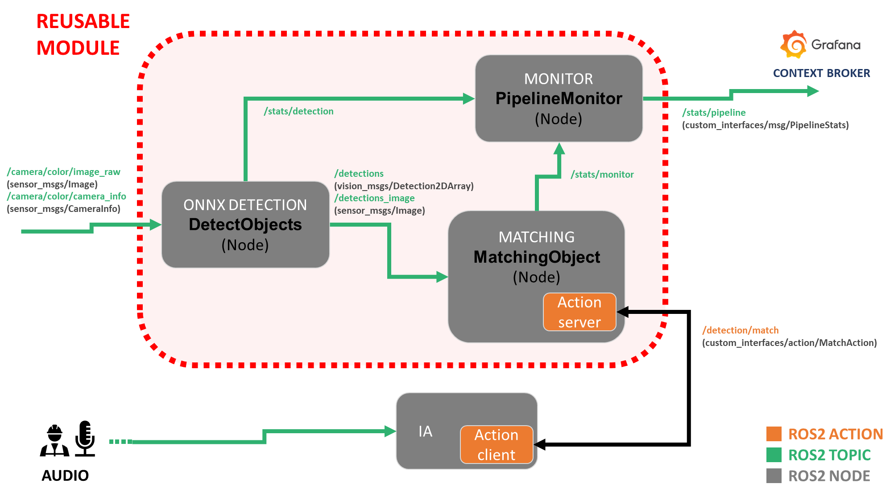
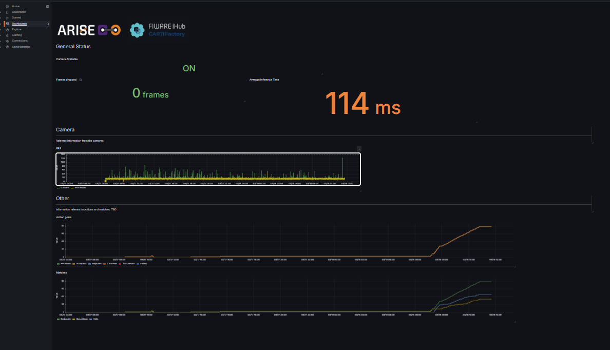

Reusable Module for Vision and target Matching
{kind=link}
Modules are part of the ARISE Middleware
Note
Access the GitHub repository here!
General Overview
ARISE aims towards making industrial HRI more accessible and cost-effective, in particular in healthcare, intra-logistics and manufacturing sectors. Each of the 4 Testing and Experimental Facilities that are part of the project gives reusable modules to serve as examples of implementations of the ARISE Middleware:
CARTIF Technology Centre: CARTIFactory (You are currently here!📍😃)
Intellimech:
PAL Robotics:
Politecnico di Milano:
These modules hope to present an integration between FIWARE Orion Context Broker and eProsima Vulcanexus to enable context-aware robotic and industrial applications, alongside ROS4HRI as an open-source ROS standard and a set of ROS packages to facilitate the development of Human-Robot Interaction (HRI) capabilities on robots.
Features
Automatic CPU / CUDA support
Segmentation support (OBB from mask)
Optional annotated image publishing
Latched
class_mappublishingIndustrial metrics (FPS, infer_ms, device, etc.)
Configurable
class_idmode
Getting started
This module represents par an AI assitant detection system. The user is expected to input a request and through Natural Language Processing, detect the task and object it is refering too. The object will become the keyword, or target object for the module.

Dependencies
All Python dependencies are included inside the requirements.txt file. To install, execute on terminal:
pip install -r /requirements.txt
This package is dependent on other ROS2 interfaces:
sudo apt install \
ros-${ROS_DISTRO}-vision-msgs \
ros-${ROS_DISTRO}-cv-bridge
What is included in the module
We provide the CARTIFactory package, home to several nodes, that together allow you to test this reusable module.
Keyword Matcher
The keyword_matcher downstream of the detector node. Its main purpose is to determine whether a requested object class is present in the latest detections.
The node subscribes to the latest detection results and stores them internally. When a match request is received through the custom_interfaces/MatchAction action server, it compares the requested keyword against the detected class labels and returns only the detections that match that keyword. Matching can be configured to be case-insensitive, to stop at the first valid match, and to ignore detections below a configurable confidence threshold.
The node additionally monitors the availability of the camera stream by tracking incoming CameraInfo messages. If no camera information is received for a configurable timeout period, the node marks the camera as unavailable and rejects incoming match action goals. This allows the node to prevent match requests from being accepted when the perception pipeline is not receiving live input.
ONNX Detector
The detector_onnx node performs image-based object detection and segmentation inference in ROS2 using an ONNX model executed with ONNX Runtime. It subscribes to a camera image topic, preprocesses each frame to the network input size, runs inference, post-processes the model outputs, and publishes the results as vision_msgs/Detection2DArray.
The node also supports optional publication of a debug image where masks, bounding boxes, labels, and oriented boxes are drawn on top of the original image. It publishes a latched class map topic so that downstream nodes can resolve class IDs to human-readable labels, either from a TOML configuration file or from fallback numeric IDs.
Configuration can be provided through ROS2 parameters and optionally complemented with a .toml file, which may define metadata such as model type, class names, default confidence threshold, and model path. The node supports execution on CPU or CUDA, depending on the selected device and available ONNX Runtime providers.
For monitoring and integration into production pipelines, the node can also publish pipeline statistics such as dropped frames and node identity. It includes an optional drop_if_busy mode to avoid queue buildup by discarding incoming frames when inference is still running on the previous one.
Overall, this node is designed as a ROS2 perception component for real-time industrial vision pipelines, combining ONNX inference, mask-based oriented detections, debug visualization, class mapping, and runtime statistics in a single detector node.
Supported ONNX model format
The current implementation expects ONNX models that follow a dense detection output structure, with optional instance segmentation support.
Outputs
The model must provide either:
Detection only
output[0]: tensor containing bounding boxes and class scores
Detection + segmentation
output[0]: tensor containing bounding boxes, class scores, and mask coefficientsoutput[1]: tensor containing mask prototypes
Expected prediction structure
Each prediction row is expected to encode:
Bounding boxes in center-based format:
(cx, cy, w, h)Per-class confidence scores
Optional mask coefficients for instance mask reconstruction
If segmentation is enabled, masks are reconstructed internally by combining the mask coefficients with the prototype tensor.
Internal postprocessing
The node assumes a dense prediction tensor where each row represents one detection candidate. Postprocessing is handled internally and includes:
Confidence filtering
Non-maximum suppression (NMS)
Optional mask reconstruction
Optional oriented bounding box (OBB) extraction from masks
If mask outputs are not present, the node automatically operates in detection-only mode.
Input preprocessing
Before inference, each image is preprocessed using the following steps:
Color conversion (
BGR → RGB)Resize or letterbox to match model input size
Normalization to
[0, 1]Layout conversion to
NCHW
Output
The node publishes:
vision_msgs/Detection2DArray
Optionally, it can also publish a debug image including:
Bounding boxes
Segmentation masks
Oriented bounding boxes (OBB)
Class labels and scores
Model compatibility
This node is compatible with ONNX models that:
Output bounding boxes and class scores in a unified tensor
Optionally include mask prototype outputs for instance segmentation
Use center-based box representation
(cx, cy, w, h)
Warning
Models that do not follow this structure may require adapting the postprocessing logic.
Pipeline Monitor
This node is used for relaying different statistics of the workspace to the Context Broker (see the latest section about FIWARE’s Context Broker).
This node subscribes to statistics topics being published by the other two nodes and publish it into a joined status message, using the interface custom_interfaces/PipelineStats.
Custom Interfaces
A custom_interfaces package is included, to handle the custom message for the pipeline information and the goal
Pipeline Statistics
For the sending the diagnostics to the Context Broker we use a custom interface custom_interfaces/PipelineStats with the followind definition:
Field |
Type |
Description |
|---|---|---|
|
|
Number of frames discarded before processing due to overload or synchronization issues. |
|
|
Total number of goals received by the action server. |
|
|
Number of goals accepted for execution. |
|
|
Number of goals rejected by the server. |
|
|
Number of goals canceled after acceptance. |
|
|
Number of goals successfully completed. |
|
|
Number of goals that finished with failure. |
|
|
Total number of match operations requested. |
|
|
Number of successful match operations. |
|
|
Number of match operations that failed. |
|
|
Frame rate of incoming images. |
|
|
Frame rate actually processed by the node. |
|
|
Average inference time per frame in milliseconds. |
|
|
Indicates whether the camera stream is currently available. |
|
|
Name of the node publishing these metrics. |
Warning
If infer_ms > 200 ms, a WARN status is published.
Detection action
This action allows a client to request a visual search operation using a keyword. The node performs detection and returns the results along with an annotated image.
Goal
Field |
Type |
Description |
|---|---|---|
|
|
Keyword describing the object or class to search for in the scene. |
Result
Field |
Type |
Description |
|---|---|---|
|
|
Indicates whether the action execution completed successfully. |
|
|
Indicates whether a matching detection was found for the requested keyword. |
|
|
Array containing the detections generated by the model. |
|
|
Image with the detections annotated for visualization or debugging. |
Feedback
Field |
Type |
Description |
|---|---|---|
|
|
Informational message describing the current status of the action execution. |
To call the action execute:
ros2 action send_goal /detection/match custom_interfaces/action/MatchAction "{kw: '<'your keyword'>}"
[!TIP] If you want to also see the feedback from the action, add
--feedbackat the end.ros2 action send_goal /detection/match custom_interfaces/action/MatchAction "{kw: <'your keyword'>}" --feedback
Tip
If you want to also see the feedback from the action, add --feedback at the end.
ros2 action send_goal /detection/match custom_interfaces/action/MatchAction "{kw: <'your keyword'>}" --feedback
# Defining the Models (TOML)
We are using [Tom's Obvious Minimal Language](https://toml.io/en/) for the configuration description of the models. The file follows this structure:
```bash
title = "Wheels"
description = "This model can detect wheels"
path = "/path_to_your_model"
[model]
weights = "wheels-seg.onnx"
[parameters]
type = "Segmentation"
confidence = 0.6
[classes]
classes=["Left","Right"]
colours = [[0, 0, 250], [250, 0, 0]]
Connecting to FIWARE’s Context Broker
The ecosystem the interaction is running under Engineering Group’s PoC ecosystem. This is necessary for the Context Broker to be able to see the ROS2 topics. For this module, the IoT Agent OPCUA is not used, so its implementation is optional.
Configure FIWARE to store the reusable module topic
To make FIWARE store the topic published by the reusable module, you first need to edit the configuration file located at:
conf/orionld/config-dds.json
Inside this file, add the following block inside:
"ngsild": {
"topics": {
...
}
Add this entry:
"rt/stats/pipeline": {
"entityType": "PipelineDetection",
"entityId": "urn:ngsi-ld:stats:1",
"attribute": "stats"
}
After adding this configuration, FIWARE will be able to detect the /stats/pipeline topic and store its data correctly in the TimescaleDB database.
Grafana connection and visualizing
To visualize the data stored in TimescaleDB with Grafana, follow the steps described in Step 4 - Access the Grafana Dashboard of the official ARISE PoC Engineering documentation. That section explains how to access Grafana, connect to the TimescaleDB data source, create a new dashboard, add panels, build queries, and select the appropriate visualization type. In the ARISE PoC guide, Grafana is available at https://localhost/login with the default credentials admin/admin, and the same section also covers datasource configuration and dashboard creation. (GitHub)
In particular, the documentation includes:
how to configure the TimescaleDB datasource in Grafana,
how to create a new dashboard,
how to add a panel,
how to write a query for the selected datasource,
and how to choose the most suitable visualization for the data. (GitHub)
Example query
The following query can be used to visualize action-goal statistics for the reusable module:
SELECT
ts AS "time",
(compound ->> 'action_goals_received')::integer AS "Received",
(compound ->> 'action_goals_accepted')::integer AS "Accepted",
(compound ->> 'action_goals_rejected')::integer AS "Rejected",
(compound ->> 'action_goals_canceled')::integer AS "Canceled",
(compound ->> 'action_goals_succeeded')::integer AS "Succeeded",
(compound ->> 'action_goals_failed')::integer AS "Failed"
FROM public.attributes
WHERE entityid = 'urn:ngsi-ld:stats:1'
ORDER BY 1;
This query retrieves time-series data for the entity urn:ngsi-ld:stats:1 from the public.attributes table. For each timestamp (ts), it extracts several counters stored inside the compound JSON field and converts them to integers.
The resulting series represent:
Received: number of action goals received by the module,
Accepted: number of action goals accepted,
Rejected: number of action goals rejected,
Canceled: number of action goals canceled,
Succeeded: number of action goals successfully completed,
Failed: number of action goals that failed.
In Grafana, this query can be displayed as a
time-series chart to monitor how the action-goal counters evolve over time.
Reusable module dashboard JSON
Additionally, the repository already includes a JSON file containing the dashboard template for the reusable module. This means users can simply import that dashboard into Grafana and immediately access the predefined visualizations, without having to create the panels manually.
Example of reusable module dashboard:
{kind=link}

Running the Module
The launch file cartifactory_pipeline.launch.py provides an easy way to start the module. You only need to define
ros2 launch cartifactory cartifactory_pipeline.launch.py toml_path:=/path/to/model.toml
The following launch arguments configure the behavior of the ONNX detector node and its ROS2 interfaces.
Launch Arguments
Argument |
Default |
Type |
Description |
|---|---|---|---|
|
|
|
Path to the |
|
|
|
Input ROS2 image topic from which the detector subscribes to images. |
|
|
|
Base topic where detection results are published. Annotated images are published on |
|
|
|
Enables publishing of the annotated debug image showing detections. |
|
|
|
QoS profile used when publishing detection messages. |
|
|
|
QoS profile used when publishing the debug image topic. |
|
|
|
Height of the image expected by the ONNX model. |
|
|
|
Width of the image expected by the ONNX model. |
|
|
|
Determines how the detected class is published: |
This project has received funding from the European Union’s Horizon 2020 research and innovation programme under grant agreement no. 101135784.